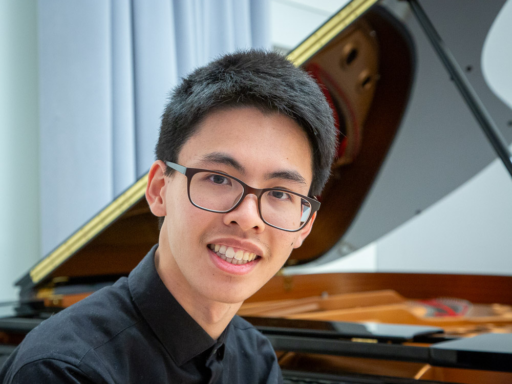
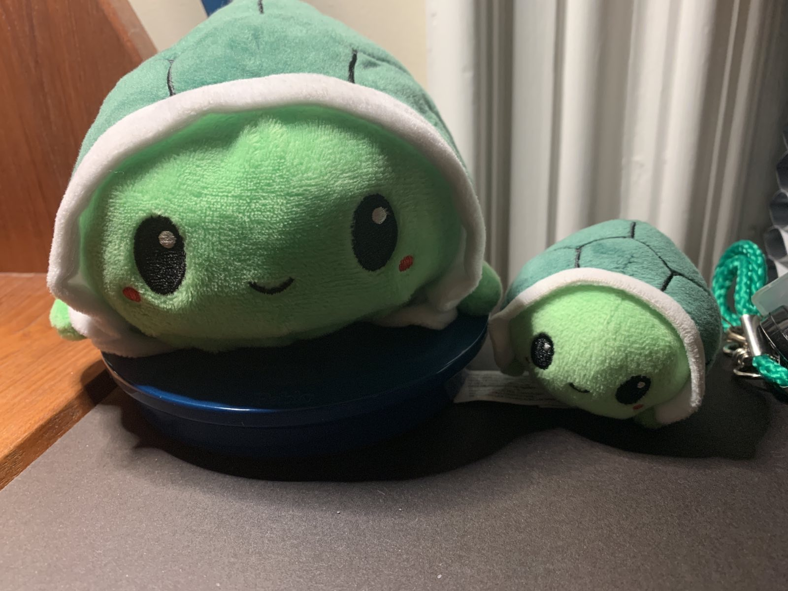

Hi!


I'm Holden!
About Me
I'm currently a research scientist at OpenAI, where I work on AI alignment. Previously, I was a research engineer at 0xPARC (now the Field Extension Institute), where I worked on building fully homomorphic encryption. Turtles are my favorite animal, and Maurice Ravel is my favorite composer.
Contact
Feel free to reach out at hello@holdenmui.com. I'm especially excited to hear from you if you knew me from a past life (school, math competitions, music extracurriculars, etc.)!